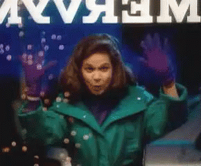
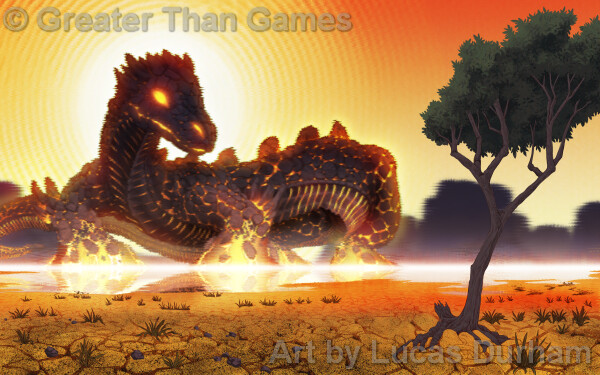
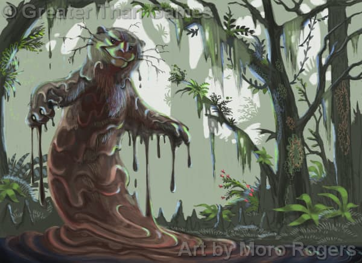

P2
Powerhound_2000
2022-07-21 16:53 UTC
#1
Christopher posted an announcement of a separate and lighter version of Spirit Island coming October 2022 to Target
Christopher posted an announcement of a separate and lighter version of Spirit Island coming October 2022 to Target
Wow, so much new Spirit Island all at once!
I, for one, hope that GTG will release the five Horizons Spirits as a Promo Pack. From what I could Parse from that post, Horizons is just the Spirit Island Base Game, but with cheaper components and different Spirits, but (unlike Sentinels Definitive Edition) it doesn’t improve any existing content. I definitely don’t want to buy a lower-quality version of a game I already have in order to get new content.
I’m tempted a) for the new spirits, and b) three new colors of presence, and c) new card backs for the invader deck. Plus I’m going to have to introduce my currently 5yo and 3yo to the game at some point, so why not?
Also, it looks like there will be at least some repeats of Minor and Major powers, based on zooming in.
Okay, now that I’ve got my disgruntled consumer rant out of the way, time for speculation!
Devouring Teeth Lurk Underfoot: It seems like both  (for thematic reasons) and (for mechanical and thematic reasons, because what is a more hostile terrain than a bunch of monsters hiding underneath your feet?) would be appropriate of this Spirit, but I’m almost certain that Horizons won’t have any tokens (or Events, for that matter). We do already two -centric Spirits anyways, so it’s not a huge loss. I like the idea of a self-buffing Spirit; it seems kind of like a Spirit version of SotM’s KNYFE. I bet this Spirit would be friends with Vengeance. Likely Elements:
(for thematic reasons) and (for mechanical and thematic reasons, because what is a more hostile terrain than a bunch of monsters hiding underneath your feet?) would be appropriate of this Spirit, but I’m almost certain that Horizons won’t have any tokens (or Events, for that matter). We do already two -centric Spirits anyways, so it’s not a huge loss. I like the idea of a self-buffing Spirit; it seems kind of like a Spirit version of SotM’s KNYFE. I bet this Spirit would be friends with Vengeance. Likely Elements:
Sun-Bright Whirlwind: First of all, the front side of Whirlwind’s Spirit Panel (as shown in the announcement) reads, “You start with your 4 Unique Power Cards and 0 Energy.” Now, this very well could just be a handy reminder (although I don’t really see how that’s necessary), or it could mean that there might be a Spirit who starts the game with some amount of Energy already, or perhaps one or more Minors or Majors. Anywho, this Spirit seems like Shadows but without the . Likely Elements:
Fathomless Mud of the Swamp: A Spirit solely dedicated to stopping Builds is something new, and it looks like it’ll probably also have some good -relocation ability. Mud will likely interact in some way with Wetlands. Likely Elements:
Eyes Watch from the Trees: I’m concerned if the designers will be able to distinguish Eyes enough from Thunderspeaker, but they probably will, in part because this Spirit also does and . This Spirit will likely interact will Jungles in some way. Also, super creepy. Likely Elements:
Rising Heat of Stone and Sands: I’m guessing that Heat’s damage is gonna be a “slow burn” over time (pun intended). But Shroud also has accumulating damage as its gimmick . . . Well, but Shroud really just uses that damage for , not destruction. And I think Heat will likely interact with Sands somehow. Likely Elements:
The only Element that I’ve predicted none of these Spirits will focuses on is Moon, but it seems likely that Eyes would have that as a tertiary focus.
Having playtested this, I’m excited!!!  Not only am I looking forward to playing with these, but having this as a demo set is going to be so much better than my current demo set.
Not only am I looking forward to playing with these, but having this as a demo set is going to be so much better than my current demo set.  Plus, I’m looking forward to using this to introduce the niblings to Spirit Island!
Plus, I’m looking forward to using this to introduce the niblings to Spirit Island! 
Oh, me too, definitely. All five of these Spirits look real nifty.
Not so much, for me. What’s wrong with the existing Invader Deck Back? And aren’t six colours of enough?
Yeah, I can make out Shadows of the Burning Forest and Cleansing Floods in this image:
And I don’t see any other Minor or Major Powers in any of the post’s image, so I think it’s safe to assume that they will all be reprints of Base Game cards.
No. Because sometimes you need thematically appropriate colors for your spirits.
Weirdly, couldn’t get the page to load images yesterday. But now that I’ve seen it, I like what I see and I feel like I’m in the same camp as Godai.  Don’t think I’d do anything with the lower quality pieces or repeated power cards, but more Spirits and more presence colors is a good thing! And probably worth 30 bucks.
Don’t think I’d do anything with the lower quality pieces or repeated power cards, but more Spirits and more presence colors is a good thing! And probably worth 30 bucks.
also mud otter mud otter mud otter
It broke their site yesterday with all the visitors so it’s not that weird.
Mud otter + wind kitty!
Yes. : )
Yeah, I couldn’t load the page at one point yesterday. Yay, I guess? Spirit Island is apparently popular enough to break GTG’s website?
I’ve run the numbers, so let’s see how the maths work out.
As I’ve expressed previously, I also have no use for reprinted Power Cards and poor-quality pieces, and I don’t really need more .
So that leaves the Spirits. Horizons will have 5 Spirits, and a price of $30.*
$30 ÷ 5 Spirits = $6 / Spirit
Now, to compare that to previous Spirit Island products.
Promo Pack 1 is the only Spirit Island product published thus far that contains only Spirits and their Unique Power Cards. It has 2 Spirits, and costs $15† to buy from GTG’s webstore.
$15 ÷ 2 Spirits = $7.50 / Spirit
So, this suggests that, disregarding all the other content in Horizons, it is actually a better deal than Promo Pack 1, Spirit for Spirit. Each Horizons Spirit costs $1.50 less than each of the the Promo Pack ones, and you’re getting the other stuff too.
So, it turns out that Horizons is actually mathematically worth your money even if you just keep the Spirits (and , I guess). You were right, @TakeWalker!
(The Spirit Island Base Game, Branch & Claw, Promo Pack 2, and Feather & Flame all also cost more $/Spirit, but that is likely because they also include other game components, and I can’t really break up their prices into Spirits and non-Spirits. Jagged Earth however, costs only $7 / Spirit, though, which is still more than Horizons, but actually less than Promo Pack 1, even though it contains plenty of non-Spirit material.)
So, what I will most likely do is wait the two years until the Target exclusivity agreement expires, and then if GTG releases a pack of just the Spirits, I’ll buy that. But if they don’t, I suppose I’ll just have to buy Horizons and just throw out all the reprinted/lower-quality stuff.
*US currency, as of 2022.
†It actually costs $14.95, but I’m rounding because prices that are ¢5 short of a dollar are stupid.
It’s a cool idea, and I hope that it accomplishes its goal of making Spirit Island a more well-known game. I won’t be able to buy it myself, for reasons of not living in the United States, but congratulations.
Regarding Mud Otter and Wind Kitty, I would guess that some fans might be miffed by their cuteness, but that doesn’t bother me personally.
Oh my… Does the core game really go for $90 MSRP? I’m all for collecting games with nice pieces, but that’s a pretty good chunk of change (he says, having already planned to back all of SotM Definitive Edition).
IMO, $30 is pretty reasonable for a jumping in point. I don’t mind cardboard pieces so much, as long as liquids remain in their containers near them. I may have to try this out myself.
Of course, the other complication, for me at least, that I realized today:
I haven’t played my physical copy of SI in over a year. <.< I have no one to play with. So this still may not be a good investment. I’ll just hope these fellows get added to digital one day.
Tangentially, I recently started listening to the Kindred Spirits Podcast, and just this afternoon I’m listening to an episode where you were quoted, Takewalker.
Oh really?  Who what where?
Who what where?
Kindred Spirits Podcast, episode 15ish, the one about Lightning’s Aspect cards.
Well, the most notable thing that jumps out to me is that Whirlwind’s Tracks have and on them, while none of the original four Low Complexity Spirits had any Elements (or other effects) on their Tracks.
Everything else looks pretty normal.
Obviously we don’t know their starting cards yet, but I’m thinking it’s a case of “get to 2 card plays first, then work energy until you can afford 3 card plays.”
hilariously, I saw that and went, “Ooh! I can take this to TTS and try it out!”
Completely forgetting you also need unique powers to play, not just a Spirit board. 
Well, it would be rough, but you could try to make a random starting hand out of some of these cards.
Which is the shortened name you think will stick? “Sun-Bright” or “Whirlwind”? Obviously “Wind Kitty” is gonna be the nickname.
I’ve been using Whirlwind, because it’s actually a noun, although I must admit that Sun-Bright does sound somewhat more evocative.
Obviously.
Yeah, agreed. That is interesting.
The thing that stuck out most to me was actually that the back side of the panel is much more explicit than previous panels about suggesting strategies to use with this spirit. It’s fitting for a more accessible format, without changing any of the rules
Yeah, I like that as a marker of “this is designed to help people get into the game”. I think it’s quite a good design choice.
It appears that Target didn’t want to wait until October to release Horizons:
And it appears that Wiki editor @Sipricy has gotten ahold of a copy and added all of the Spirits to the Wiki: Category:Horizons of Spirit Island - Spirit Island Wiki
Well, what does everyone think of these five new Spirits?
Oh, it’s been out there for a few weeks, listed as “Sold out”. Once in a while it sends a notification to folks that there’s something available, but then it isn’t when we actually go check.  Been kinda annoying, but I never expected to be able to order it until October, so it’s not that big of a deal.
Been kinda annoying, but I never expected to be able to order it until October, so it’s not that big of a deal. 
Having playtested them, they are a lot of fun! I’ll be using this as my new demo set to introduce people to the game, to be honest.

I love every single one of these. Each one has some way in which it feels pleasantly broken, for one. (Defend 8 and 9 on unique powers???)
I adore the lore for Rising Heat. And fascinating that one of them has two Gifts!
I’m going to try and mock up some boards and test a few of these out on my stream tonight.
General Thoughts
Firstly, I’ll note that the five Spirits nicely fit into different roles without much overlap: Rising Heat and Teeth Lurk are both Offense, Whirlwind is Control, Eyes Watch is Defense, and Fathomless Mud is a jack-of-all-trades.
I noticed that the Spirits come with Power Progressions, which is a thing that I wasn’t at all expecting yet is completely obvious in hindsight. That’s a good choice, as choosing Power cards to gain can often be a tough choice for new players. Although I also notice that some of the Powers overlap with the Core Game’s Low-Complexity Spirits’ Power Progressions, but that will likely not be a problem.
I really don’t think that putting “You start with your 4 Unique Powers and 0 Energy.” in all of the Setup sections on each Spirit Panel is at all necessary. It is a rule that is (presumably) very clearly spelled out in the rulebook.
And I really, really do not like all the reminder text on the Spirit Panels and Unique Power Cards. I, personally, would find them very distracting, annoying, and completely unnecessary.
A couple of notably egregious examples:
Of course it’s required, because it doesn’t say that it’s optional.
What a Power is is clearly defined in the rulebook, and furthermore, it’s incredibly obvious that Power Cards and Innate Powers are both considered Powers.
And yes, I do realize that these reminders are likely fairly helpful to new players, which is the entire point of Horizons. They just simply seem superfluous to me, a long-time player. Nonetheless, I completely understand GTG’s and Eric’s decision to add them, and I absolutely respect that decision and their judgment.
I only hope that after the Target deal expires, GTG will release a pack of these Spirits without the reminder text for veteran players.
And, despite my above misgivings, I want to be clear that I still think all these Spirits look really cool.
Spirit-Specific Thoughts
Overall, although I do have a number of stylistic nitpicks, I am very excited for these Spirits! : )
This is exactly the line I was talking about. 
And I tell you what, though so far I’ve only played Teeth, I am very thankful for that damage reminder, especially on its innate, because I have definitely forgotten it multiple times already. XD
0 voters
Desert Lizard’s Spirit Panel art looks oddly CGI to me. Is this just me, or does anyone else see it too?

Additionally, Mud Otter’s panel art looks surprisingly menacing, but in a cute way. : )

It’s that way in all of its art. (Take a look at the cover for a good example.) It seems like it’s meant to show the heat coming off of it, like the waves of heat you might see coming off of a hot surface?
Well, it looks like Eyes and Whirlwind are quite ahead albeit tied in the polls.
According to the Target app, the game is in stock at a bunch of my local stores. Visiting in person, however, reveals none on the shelves, nor yet a spot for them (and thus no code for me to ask about in back). So looks like they are on site, waiting for the nebulous release date.
The wait continues.
Have you tried asking the employees? Some of them are going in the back to retrieve a copy! I know one of them near me did, that’s how I have a copy.
Need to know the number they use, so they can locate where in the back the boxes are. Unless they just happened to know where the box was before hand. Usually something ### ### ####
Think it would be the UPC number? Or something internal they use?
Internal. It’s ### (department) ### (subset) #### (specific item). Ah well, one day soon.
And we already have box inserts out there!
I got this laser-cut wood insert, and it is working out really well: Horizons of Spirit Island Insert Wooden Organizer - Etsy.
This one looks pretty good, also, but I wanted wood over plastic.  I especially like the fear deck holder!
I especially like the fear deck holder!


{kind=link}
{kind=link}
{kind=link}